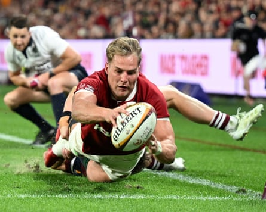
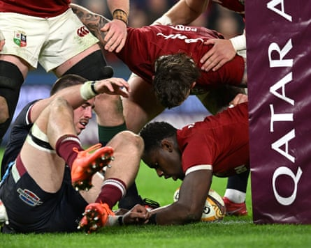

Let’s just say that a stiffer examination awaits the British & Irish Lions when their long-awaited Test series against Australia kicks off at this venue in just over a fortnight. The Queensland Reds had their moments in the first half but were put away with something to spare by an increasingly dominant visiting side.
The Lions did blow hot and cold at times, still clearly striving for the all-important little connections that make such a massive difference at this level. But in Maro Itoje they had a captain clearly determined to lead from the front and a couple of tries for his England teammate Tommy Freeman helped the men in red rack up eight tries.
Considering the travel logistics the squad are having to negotiate it was no mean effort, particularly given the backline reshuffle required in the second-half after Elliot Daly was forced off after taking a painful blow to his left arm. Given Daly was only playing as a late replacement for the unwell Hugo Keenan it can only be hoped the injury update is not too serious.
Duhan van der Merwe reaches to touch downPhotograph: Dave Hunt/EPA
The good news for the Lions, however, is the nascent combination at half-back between Jamison Gibson-Park and Finn Russell looks to have considerable potential. Both have the ability to think at least a couple of phases ahead and there was encouraging evidence they are already on each other’s wavelength.
Jack Conan and Ollie Chessum put in whole-hearted performances while there were second-half tries for a motivated Jac Morgan and Huw Jones. All of them will be waiting, along with everyone else, to see whether they have done enough to play themselves into the selection frame for the first Test.
It was an unusually cool and windy day in Brisbane, although the towering stands of this steep-sided venue blocked out the worst of the elements. The opening exchanges were scrappy nevertheless, with the Lions struggling for accuracy and cohesion. The Reds duly scented an opportunity and put together a series of forward surges before their big prop Jeffery Toomaga-Allen blasted over.
In the first quarter the Lions defensive line was also pierced too often for comfort and two scrum penalties in the Reds’ favour was a further concern. It was a timely bonus, then, when an Itoje turnover set up a promising position from which Daly put the unmarked Freeman over on the right.
Things were proving rather less comfortable on the other flank, however, for Duhan Van der Merwe. He almost got into a tangle trying to deal with a cross kick on his own line and not long afterwards he was left flat-footed as Josh Flook nipped in to collect another rolling ball and restore the Reds’ lead.
Once again it seemed to stir the Lions into life and after a quick penalty tap by Ronan Kelleher Andrew Porter burrowed his way to the line. There was also a relieving moment for Van der Merwe when, put away by slick offloads from Chessum and Conan, he finished emphatically in the left corner.
The Lions’ 21-12 half-time lead, though, could not mask some self-inflicted wounds, not least eight knock-ons. Daly and Huw Jones are gifted sportsmen but they made a hash of giving potential scoring passes that might have given the Lions a more comfortable cushion.
Maro Itoje grounds the ball for his first try of the tour.Photograph: Darren England/AAP
On another day it might have been more costly. Gibson-Park expertly exploited a small gap in the defence to set up Itoje for his side’s fourth try before wholesale changes meant both starting half-backs and the entire front row were replaced with half an hour left.
It made little difference with Morgan bursting through a widening hole to score the fifth try, Freeman twisting cleverly over for his second and Jones completing a long-range interception score. The Lions did turn over the ball a fair amount but had long since cracked the QR code by the time Garry Ringrose’s late score took them to their half-century.
From a Wallaby perspective, meanwhile, there are also worrying reports surrounding two of their most influential forwards, Will Skelton and Rob Valetini. Both are poised to miss Saturday’s game against Fiji in Newcastle with calf injuries which, unless they heal swiftly, could threaten their first Test participation.